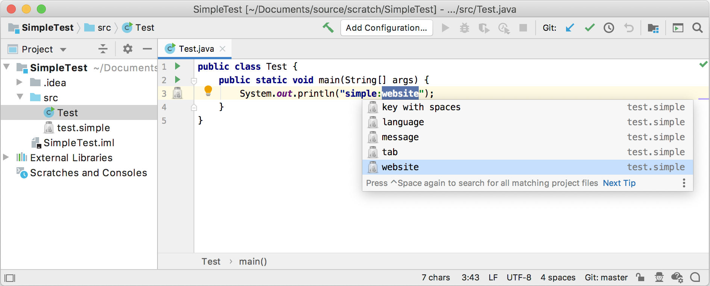
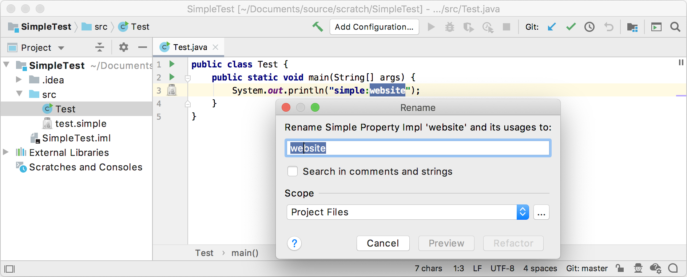
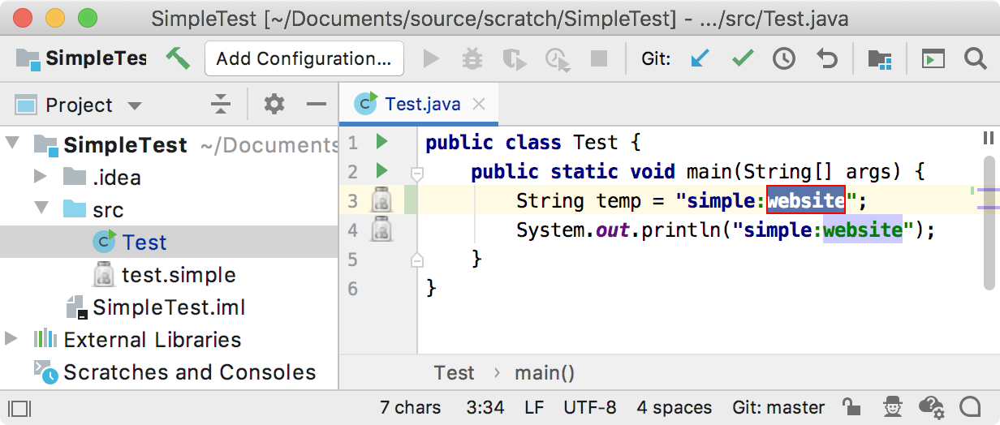

10. Reference Contributor
The References functionality is one of the most important parts in the implementation of custom language support. Resolving references means the ability to go from the usage of an element to its declaration, completion, rename refactoring, find usages, etc.
- 10.1. Define a Named Element Class
- 10.2. Define Helper Methods for Generated PSI Elements
- 10.3. Define an Element Factory
- 10.4. Update Grammar and Regenerate the Parser
- 10.5. Define a Reference
- 10.6. Define a Reference Contributor
- 10.7. Register the Reference Contributor
- 10.8. Run the Project
- 10.9. Define a Refactoring Support Provider
- 10.10. Register the Refactoring Support Provider
- 10.11. Run the Project
10.1. Define a Named Element Class
The classes below show how the Simple Language fulfills the need to implement PsiNamedElement.
The SimpleNamedElement interface is subclassed from PsiNameIdentifierOwner.
// Copyright 2000-2020 JetBrains s.r.o. and other contributors. Use of this source code is governed by the Apache 2.0 license that can be found in the LICENSE file.
package org.intellij.sdk.language.psi;
import com.intellij.psi.PsiNameIdentifierOwner;
public interface SimpleNamedElement extends PsiNameIdentifierOwner {
}
The SimpleNamedElementImpl class implements the SimpleNamedElement interface and extends ASTWrapperPsiElement.
// Copyright 2000-2020 JetBrains s.r.o. and other contributors. Use of this source code is governed by the Apache 2.0 license that can be found in the LICENSE file.
package org.intellij.sdk.language.psi.impl;
import com.intellij.extapi.psi.ASTWrapperPsiElement;
import com.intellij.lang.ASTNode;
import org.intellij.sdk.language.psi.SimpleNamedElement;
import org.jetbrains.annotations.NotNull;
public abstract class SimpleNamedElementImpl extends ASTWrapperPsiElement implements SimpleNamedElement {
public SimpleNamedElementImpl(@NotNull ASTNode node) {
super(node);
}
}
10.2. Define Helper Methods for Generated PSI Elements
Modify SimplePsiImplUtil to support new methods that get added to the PSI class for Simple Language.
Note that SimpleElementFactory isn’t defined until the next step, so for now it shows as an error.
public class SimplePsiImplUtil {
// ...
public static String getName(SimpleProperty element) {
return getKey(element);
}
public static PsiElement setName(SimpleProperty element, String newName) {
ASTNode keyNode = element.getNode().findChildByType(SimpleTypes.KEY);
if (keyNode != null) {
SimpleProperty property = SimpleElementFactory.createProperty(element.getProject(), newName);
ASTNode newKeyNode = property.getFirstChild().getNode();
element.getNode().replaceChild(keyNode, newKeyNode);
}
return element;
}
public static PsiElement getNameIdentifier(SimpleProperty element) {
ASTNode keyNode = element.getNode().findChildByType(SimpleTypes.KEY);
if (keyNode != null) {
return keyNode.getPsi();
} else {
return null;
}
}
// ...
}
10.3. Define an Element Factory
The SimpleElementFactory provides methods for creating SimpleFile.
package org.intellij.sdk.language.psi;
import com.intellij.openapi.project.Project;
import com.intellij.psi.*;
import org.intellij.sdk.language.SimpleFileType;
public class SimpleElementFactory {
public static SimpleProperty createProperty(Project project, String name) {
final SimpleFile file = createFile(project, name);
return (SimpleProperty) file.getFirstChild();
}
public static SimpleFile createFile(Project project, String text) {
String name = "dummy.simple";
return (SimpleFile) PsiFileFactory.getInstance(project).
createFileFromText(name, SimpleFileType.INSTANCE, text);
}
}
10.4. Update Grammar and Regenerate the Parser
Now make corresponding changes to the Simple.bnf grammar file by replacing the property definition with the lines below.
Don’t forget to regenerate the parser after updating the file!
Right-click on the Simple.bnf file and select Generate Parser Code.
property ::= (KEY? SEPARATOR VALUE?) | KEY {
mixin="org.intellij.sdk.language.psi.impl.SimpleNamedElementImpl"
implements="org.intellij.sdk.language.psi.SimpleNamedElement"
methods=[getKey getValue getName setName getNameIdentifier]
}
10.5. Define a Reference
Now define a reference class to resolve a property from its usage.
This requires extending PsiReferenceBase and implementing PsiPolyVariantReference.
The latter enables the reference to resolve to more than one element or to resolve result(s) for a superset of valid resolve cases.
// Copyright 2000-2020 JetBrains s.r.o. and other contributors. Use of this source code is governed by the Apache 2.0 license that can be found in the LICENSE file.
package org.intellij.sdk.language;
import com.intellij.codeInsight.lookup.*;
import com.intellij.openapi.project.Project;
import com.intellij.openapi.util.TextRange;
import com.intellij.psi.*;
import org.intellij.sdk.language.psi.SimpleProperty;
import org.jetbrains.annotations.*;
import java.util.*;
public class SimpleReference extends PsiReferenceBase<PsiElement> implements PsiPolyVariantReference {
private String key;
public SimpleReference(@NotNull PsiElement element, TextRange textRange) {
super(element, textRange);
key = element.getText().substring(textRange.getStartOffset(), textRange.getEndOffset());
}
@NotNull
@Override
public ResolveResult[] multiResolve(boolean incompleteCode) {
Project project = myElement.getProject();
final List<SimpleProperty> properties = SimpleUtil.findProperties(project, key);
List<ResolveResult> results = new ArrayList<>();
for (SimpleProperty property : properties) {
results.add(new PsiElementResolveResult(property));
}
return results.toArray(new ResolveResult[results.size()]);
}
@Nullable
@Override
public PsiElement resolve() {
ResolveResult[] resolveResults = multiResolve(false);
return resolveResults.length == 1 ? resolveResults[0].getElement() : null;
}
@NotNull
@Override
public Object[] getVariants() {
Project project = myElement.getProject();
List<SimpleProperty> properties = SimpleUtil.findProperties(project);
List<LookupElement> variants = new ArrayList<>();
for (final SimpleProperty property : properties) {
if (property.getKey() != null && property.getKey().length() > 0) {
variants.add(LookupElementBuilder
.create(property).withIcon(SimpleIcons.FILE)
.withTypeText(property.getContainingFile().getName())
);
}
}
return variants.toArray();
}
}
10.6. Define a Reference Contributor
A reference contributor allows the simple_language_plugin to provide references to Simple Language from elements in other languages such as Java.
Create SimpleReferenceContributor by subclassing PsiReferenceContributor.
Contribute a reference to each usage of a property:
// Copyright 2000-2020 JetBrains s.r.o. and other contributors. Use of this source code is governed by the Apache 2.0 license that can be found in the LICENSE file.
package org.intellij.sdk.language;
import com.intellij.openapi.util.TextRange;
import com.intellij.patterns.PlatformPatterns;
import com.intellij.psi.*;
import com.intellij.util.ProcessingContext;
import org.jetbrains.annotations.NotNull;
import static org.intellij.sdk.language.SimpleAnnotator.*;
public class SimpleReferenceContributor extends PsiReferenceContributor {
@Override
public void registerReferenceProviders(@NotNull PsiReferenceRegistrar registrar) {
registrar.registerReferenceProvider(PlatformPatterns.psiElement(PsiLiteralExpression.class),
new PsiReferenceProvider() {
@NotNull
@Override
public PsiReference[] getReferencesByElement(@NotNull PsiElement element,
@NotNull ProcessingContext context) {
PsiLiteralExpression literalExpression = (PsiLiteralExpression) element;
String value = literalExpression.getValue() instanceof String ?
(String) literalExpression.getValue() : null;
if ((value != null && value.startsWith(SIMPLE_PREFIX_STR + SIMPLE_SEPARATOR_STR))) {
TextRange property = new TextRange(SIMPLE_PREFIX_STR.length() + SIMPLE_SEPARATOR_STR.length() + 1,
value.length() + 1);
return new PsiReference[]{new SimpleReference(element, property)};
}
return PsiReference.EMPTY_ARRAY;
}
});
}
}
10.7. Register the Reference Contributor
The SimpleReferenceContributor implementation is registered with the IntelliJ Platform using the com.intellij.psi.referenceContributor extension point.
<extensions defaultExtensionNs="com.intellij">
<psi.referenceContributor implementation="org.intellij.sdk.language.SimpleReferenceContributor"/>
</extensions>
10.8. Run the Project
Rebuild the project, and run simple_language_plugin in a Development Instance.
The IDE now resolves the property and provides completion suggestions:

The Rename refactoring functionality is now available from definition and usages.

10.9. Define a Refactoring Support Provider
Support for in-place refactoring is specified explicitly in a refactoring support provider.
Create SimpleRefactoringSupportProvider by subclassing RefactoringSupportProvider
As long as an element is a SimpleProperty it is allowed to be refactored:
// Copyright 2000-2020 JetBrains s.r.o. and other contributors. Use of this source code is governed by the Apache 2.0 license that can be found in the LICENSE file.
package org.intellij.sdk.language;
import com.intellij.lang.refactoring.RefactoringSupportProvider;
import com.intellij.psi.PsiElement;
import org.intellij.sdk.language.psi.SimpleProperty;
import org.jetbrains.annotations.*;
public class SimpleRefactoringSupportProvider extends RefactoringSupportProvider {
@Override
public boolean isMemberInplaceRenameAvailable(@NotNull PsiElement elementToRename, @Nullable PsiElement context) {
return (elementToRename instanceof SimpleProperty);
}
}
10.10. Register the Refactoring Support Provider
The SimpleRefactoringSupportProvider implementation is registered with the IntelliJ Platform in the plugin configuration file using the com.intellij.lang.refactoringSupport extension point.
<extensions defaultExtensionNs="com.intellij">
<lang.refactoringSupport language="Simple"
implementationClass="org.intellij.sdk.language.SimpleRefactoringSupportProvider"/>
</extensions>
10.11. Run the Project
Rebuild the project, and run simple_language_plugin in a Development Instance.
The IDE now supports refactoring suggestions:
